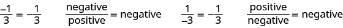

ভগ্নাংশ-রেখাযুক্ত রাশি সরল করো
উৎস-অনুগত উপবিভাগ · m81287-fs-id2211912। সম্পূর্ণ বইয়ের অনুবাদ এখনও চলছে। গাণিতিক চিহ্ন, সংখ্যা ও মূল কাঠামো অক্ষুণ্ণ; প্রযোজ্য ক্ষেত্রে সূত্রের শব্দলেবেল বাংলায় অনূদিত। মূল ছবির ভিতরের ইংরেজি লেবেলের অর্থ বাংলা বিবরণে আছে। স্বাধীন শিক্ষক ও ভাষা-পর্যালোচনা বাকি। অন্য উপবিভাগের উৎস-লিঙ্কে ইন্টারনেট প্রয়োজন।
ভগ্নাংশ-রেখাযুক্ত রাশি সরল করো
ভগ্নাংশে ঋণাত্মক চিহ্নটি কোথায় বসবে? সাধারণত চিহ্নটি ভগ্নাংশের সামনে বসে, তবে কখনও লব বা হরের সঙ্গেও ঋণাত্মক চিহ্ন দেখতে পাবে। মনে রাখো, ভগ্নাংশ ভাগ বোঝায়। ভগ্নাংশ পাওয়া যায় ঋণাত্মক সংখ্যাকে ধনাত্মক সংখ্যা দিয়ে ভাগ করলে, যেমন অথবা ধনাত্মক সংখ্যাকে ঋণাত্মক সংখ্যা দিয়ে ভাগ করলে, যেমন যখন লব ও হর বিপরীত চিহ্নযুক্ত হয়, তখন ভাগফল ঋণাত্মক হয়।

বাঁ দিকে: লব ঋণাত্মক ১ ও হর ধনাত্মক ৩-এর ভগ্নাংশ সমান ঋণাত্মক এক-তৃতীয়াংশ; কথায়, ঋণাত্মক সংখ্যাকে ধনাত্মক সংখ্যা দিয়ে ভাগ করলে ফল ঋণাত্মক। ডান দিকে: লব ধনাত্মক ১ ও হর ঋণাত্মক ৩-এর ভগ্নাংশও সমান ঋণাত্মক এক-তৃতীয়াংশ; কথায়, ধনাত্মক সংখ্যাকে ঋণাত্মক সংখ্যা দিয়ে ভাগ করলে ফল ঋণাত্মক।
লব ও হর দুটিই ঋণাত্মক হলে ভগ্নাংশটির মান ধনাত্মক হয়, কারণ তখন ঋণাত্মক সংখ্যাকে ঋণাত্মক সংখ্যা দিয়ে ভাগ করা হয়।
অনুশীলন · এই প্রশ্নের লিঙ্ক
নীচের তালিকার কোন কোন ভগ্নাংশের মান এই ভগ্নাংশটির সমান:
সমাধান
ধনাত্মক সংখ্যাকে ঋণাত্মক সংখ্যা দিয়ে ভাগ করলে ভাগফল ঋণাত্মক হয়। তাই ঋণাত্মক। তালিকায় দেওয়া ভগ্নাংশগুলির মধ্যে এবং ঋণাত্মক এবং এদের মানও ওই ভগ্নাংশটির সমান। তাই এই দুটিই সমতুল ভগ্নাংশ।
ভগ্নাংশ-রেখা রাশিকে একত্রে ধরার চিহ্ন হিসেবে কাজ করে। রেখার উপরের পুরো রাশি এবং নীচের পুরো রাশিকে এমনভাবে ধরতে হবে যেন প্রত্যেকটি আলাদা বন্ধনীর মধ্যে আছে। যেমন, মানে ক্রিয়ার ক্রম অনুযায়ী ভাগ করার আগে লব ও হরের রাশি দুটিকে আলাদা করে সরল করতে হয়—ঠিক যেন তারা বন্ধনীর মধ্যে আছে। হরের মান শূন্য হতে পারে না।
বীজগণিতের ভাষা ব্যবহার করো পাঠে দেখা রাশিকে একত্রে ধরার চিহ্নগুলির তালিকায় এবার ভগ্নাংশ-রেখাও যোগ করব, যাতে তালিকাটি আরও সম্পূর্ণ হয়।
অনুশীলন · এই প্রশ্নের লিঙ্ক
সরল করো:
সমাধান
| লবের রাশিটি সরল করো। | |
| হরের রাশিটি সরল করো। | |
| ভগ্নাংশটিকে লঘিষ্ঠ আকারে লেখো। | 6 |
অনুশীলন · এই প্রশ্নের লিঙ্ক
সরল করো:
সমাধান
| ক্রিয়ার ক্রম মেনে চলো। লবে গুণ করো এবং হরে ঘাতের মান নির্ণয় করো। | |
| লব ও হরের রাশি দুটিকে সরল করো। | |
| ভগ্নাংশটিকে লঘিষ্ঠ আকারে লেখো। |
অনুশীলন · এই প্রশ্নের লিঙ্ক
সরল করো:
সমাধান
| ক্রিয়ার ক্রম মেনে চলো: আগে বন্ধনীর ভিতরের হিসাব, তারপর ঘাতের মান নির্ণয়। | |
| লব ও হরের রাশি দুটিকে সরল করো। | |
| ভগ্নাংশটিকে লঘিষ্ঠ আকারে লেখো। |